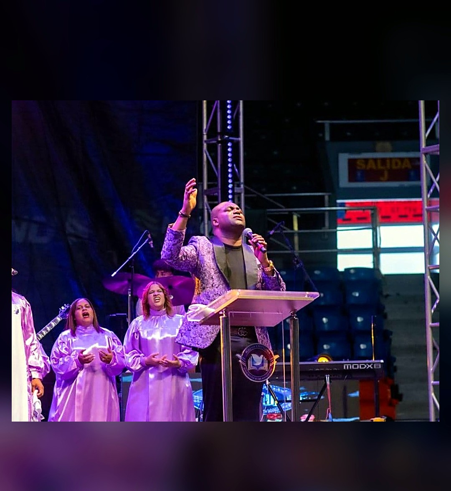

Pastor Principal
Profeta Javier Belliard
Pastor Principal · Voz Profética
Voz profética para esta generación. Esposo de Marnie Disla D Belliard y padre de 3 hijos. Pastor principal de la Iglesia Jesucristo es Mi Amigo Fiel. Predicador internacional con eventos en RD, EE.UU. y más.
- 2.4M+ seguidores en Facebook red con mayor alcance
- 373K+ seguidores en TikTok en vivo
- 249K+ suscriptores en YouTube · 1.5K+ videos en vivo
- Comunidad activa en @profetajavierbelliard perfil oficial del Pastor
- Ministerio de milagros, profecía y restauración